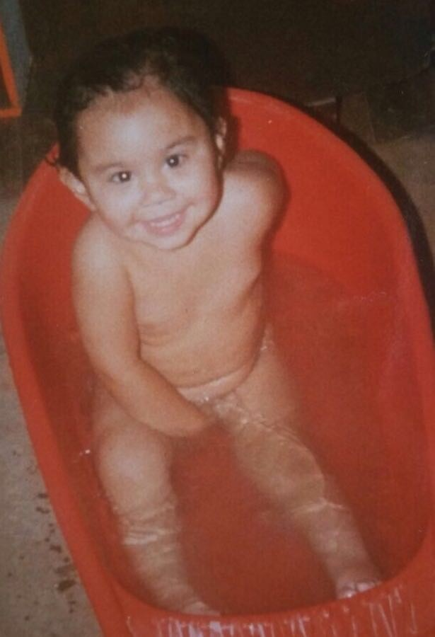

A pesar de estos días tan raros que estamos viviendo...
¡¡¡Espero que lo podamos celebrar como te mereces y que cumplas muchos más!!!
Y para que veas cómo de rápido pasa el tiempo y la importancia de que nunca pierdas la sonrisa, te dejo esta foto:
NUNCA pierdas esa sonrisa
¡¡¡TE QUIERO, PATITAS!!!